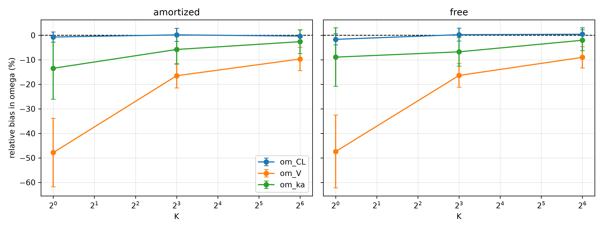
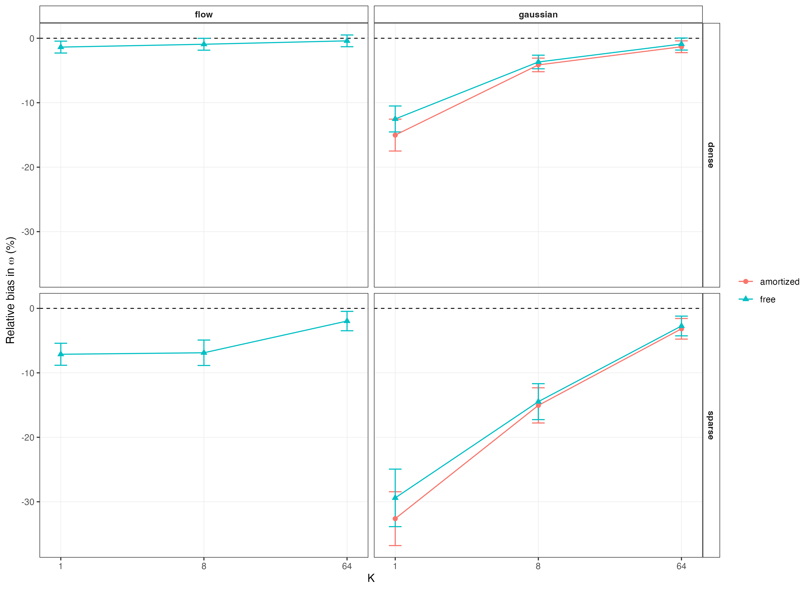
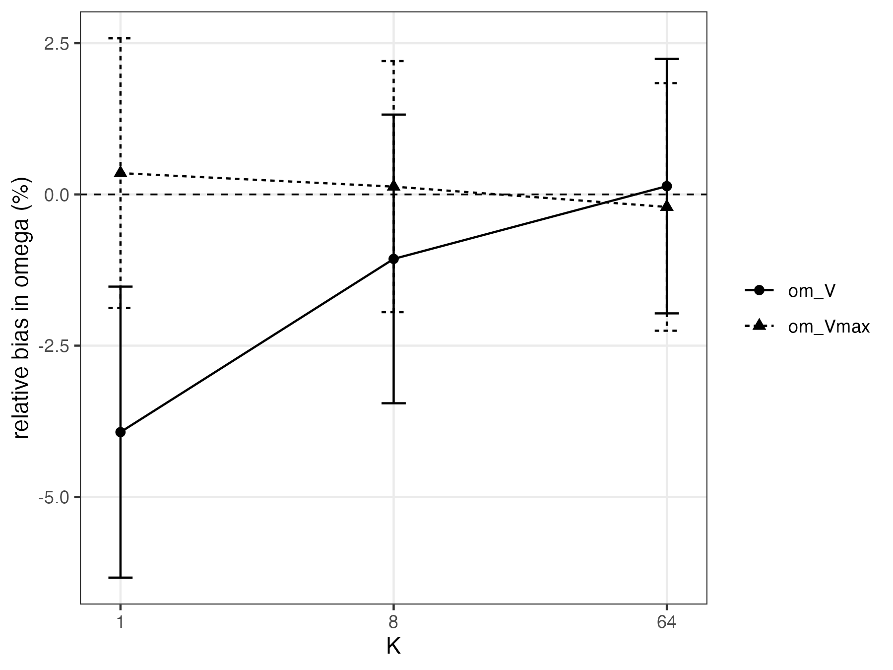
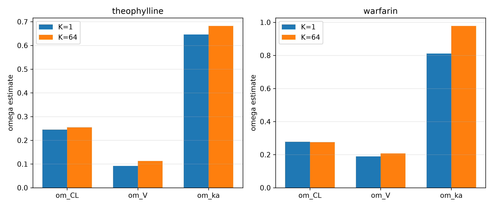
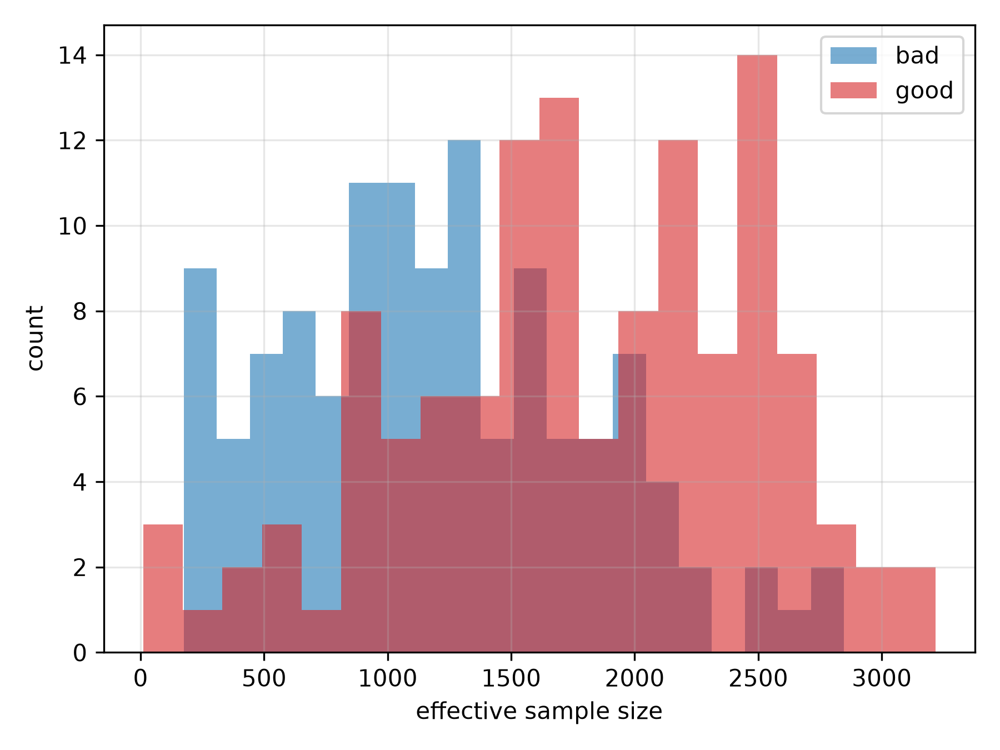
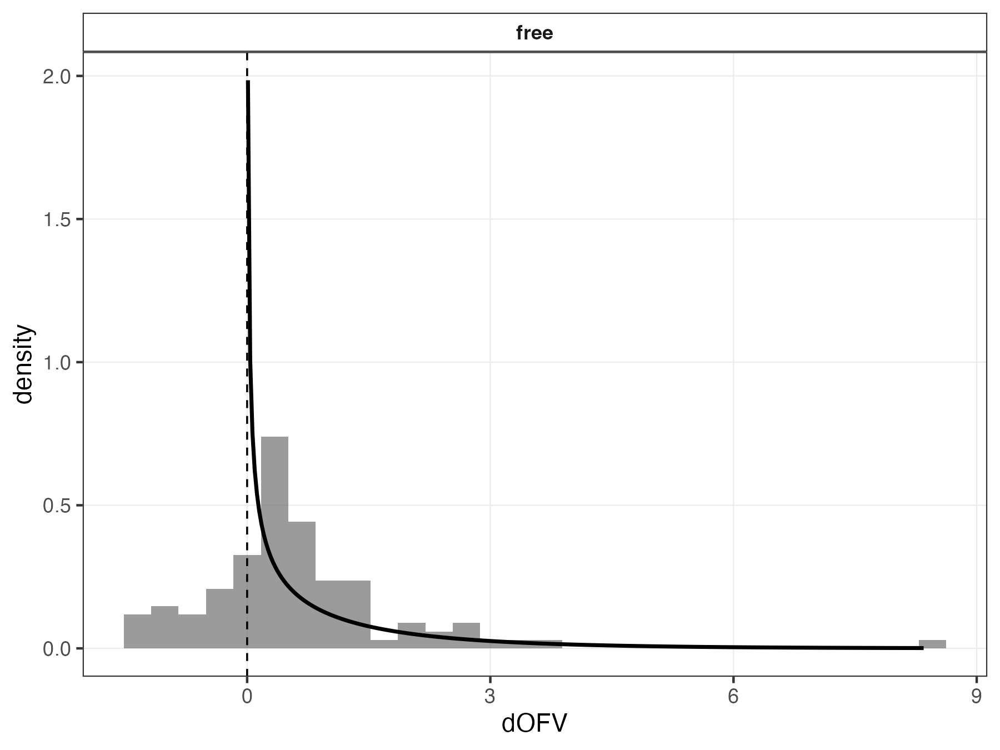

Importance-Weighted Variational Inference for Nonlinear Mixed-Effects Models: Characterizing and Correcting Random-Effect Variance Bias
Abstract
Nonlinear mixed-effects (NLME) models are the standard tool for characterizing between-subject variability in pharmacokinetic and pharmacodynamic data, but established estimation methods – first-order conditional estimation with interaction (FOCEI) and stochastic approximation expectation-maximization (SAEM) – scale poorly with population size and model complexity. Variational inference (VI) has recently been proposed as a faster alternative, including amortized formulations that reuse a single trained model across new datasets (Arruda et al. 2024). We show, across simulated and real data, that the plain evidence lower bound (ELBO, \(K=1\)) systematically underestimates between-subject variance components (Omega), while importance-weighted ELBO (IW-ELBO, \(K>1\)) and richer variational families (normalizing flows) substantially correct this bias. Against independent FOCEI and SAEM baseline fits on matched simulated data, corrected variational inference (\(K=64\)) recovers both fixed effects and Omega with accuracy closely matching both established methods (Omega bias under 1.2% for every parameter), while \(K=1\) reproduces the same systematic underestimation identified throughout this work (Omega bias up to \(-22\%\) on the most affected parameter). The correction also reproduces cleanly on two independent real pharmacokinetic datasets (theophylline, warfarin), with fixed-effect estimates on warfarin falling inside the published 95% confidence intervals of an independent FOCEI fit despite a simpler structural model. Extending to a genuinely nonlinear (Michaelis-Menten elimination) model, the same correction holds for parameters with between-subject variability, while we identify and resolve a structural, cross-method identifiability limitation specific to estimating variability on both Michaelis-Menten parameters simultaneously. We further show that likelihood-ratio tests built on the variational posterior’s recovered marginal likelihood are only valid for random-effect-structure comparisons under a shared-encoder (amortized) posterior, not a per-subject free posterior, due to an effective-degrees-of-freedom mismatch with classical asymptotic theory. Finally, we characterize a diagnostic (importance-sampling effective sample size) that separates well- from poorly-converged fits without requiring ground truth. Together, these results give practitioners concrete guidance for when and how variational inference can safely replace established NLME estimation methods.
Introduction
Nonlinear mixed-effects (NLME) models describe how a shared population structure – fixed effects and the distribution of between-subject random effects – gives rise to individual-level observations, and they remain the standard analytic tool across pharmacokinetics, pharmacodynamics, and related fields wherever repeated, correlated measurements are collected on a heterogeneous population. Because the individual-level likelihood required to fit an NLME model is generally only available as an intractable integral over the random effects (Pinheiro 1994), every established estimation method relies on some form of approximation. First-order conditional estimation with interaction (FOCEI) (Beal and Sheiner 1980; Wang 2008) linearizes the model around each subject’s conditional mode; stochastic approximation expectation-maximization (SAEM) (Kuhn and Lavielle 2005) instead uses a stochastic sampling scheme that converges under weaker assumptions but at substantially higher computational cost, particularly as the number of random effects or the structural complexity of the model grows.
Variational inference (VI) reformulates this integration problem as an optimization problem: rather than sampling or linearizing, a tractable family of approximate posterior distributions is fit to the true posterior by maximizing a lower bound on the marginal likelihood, the evidence lower bound (ELBO). Recent work has proposed amortized VI for NLME models specifically, in which a single neural network is trained once to produce individual-specific posteriors for any new subject’s data, making the population-level inference step that follows extremely cheap and reusable across datasets and even across different population models (Arruda et al. 2024). This amortized approach, and related simulation-based inference methods more broadly, promise a substantial speed advantage over FOCEI and SAEM, particularly for large populations or structurally complex models.
However, a known and under-characterized limitation of the plain ELBO is that it systematically underestimates posterior variance – a general property of ELBO-based VI wherever the approximating family cannot perfectly capture the true posterior’s shape, which is essentially always the case for the per-subject posteriors induced by an NLME model. Several recent applications of variational inference to NLME models have flagged this tendency in passing without characterizing it directly (Tarek and Afonso; Li et al.; Baaz et al.). In the NLME setting specifically, this translates into underestimated between-subject variance components (commonly denoted Omega, or written as the diagonal of a covariance matrix \(\Omega\)) – precisely the quantity that most directly answers scientific questions about population heterogeneity, and the quantity on which decisions such as covariate inclusion are frequently based. While this failure mode has been noted in passing in several places in the recent literature applying VI to NLME models, it has not, to our knowledge, been systematically characterized: under what conditions it arises, whether it can be corrected, and whether correcting the point estimates of \(\Omega\) is sufficient to make the resulting fit trustworthy for the full range of downstream uses an NLME model is put to – in particular, likelihood-ratio-based model selection.
This paper makes the following contributions:
- We systematically characterize plain-ELBO (\(K=1\)) Omega underestimation across simulated designs (dense and sparse sampling), variational posterior architectures (per-subject free posteriors vs. amortized encoder-based posteriors), and variational families (Gaussian vs. normalizing flow), and show that both importance-weighting (\(K>1\), via the importance-weighted ELBO) and richer variational families substantially correct the bias, with flow-based posteriors closing nearly the entire gap even at \(K=1\) in well-identified designs.
- We validate the correction against independent FOCEI and SAEM baseline fits on matched simulated data: corrected variational inference (\(K=64\)) matches both established methods’ accuracy closely (Omega bias under 1.2% on every parameter, comparable to FOCEI’s and SAEM’s own bias), while \(K=1\) reproduces the same systematic underestimation characterized above (Omega bias up to \(-22\%\)), directly confirming that the corrected point estimates – not just their relative improvement over \(K=1\) – are quantitatively trustworthy against established methods, not only self-consistent within variational inference.
- We further validate the correction on two independent real pharmacokinetic datasets, including an external benchmark comparison in which our fixed-effect estimates agree with an independently published FOCEI fit despite using a simpler structural model.
- We extend the analysis to a genuinely nonlinear elimination model (Michaelis-Menten kinetics) with no closed-form solution, and identify a structural identifiability limitation – consistent with standard pharmacometric practice, not a VI-specific artifact – for estimating between-subject variability on both Michaelis-Menten parameters simultaneously, resolving it via a design restricting random effects to the empirically well-identified parameter.
- We show that the marginal likelihood recovered by variational inference is not uniformly valid for likelihood-ratio tests: for comparisons that change the number of random effects, a per-subject free posterior introduces additional effective degrees of freedom that classical asymptotic theory – including the correct boundary-mixture reference for testing a variance component against zero (Self and Liang 1987) – does not account for, while an amortized posterior’s shared encoder does not have this problem.
- We characterize an importance-sampling diagnostic (effective sample size) that distinguishes well- from poorly-converged fits without requiring access to ground truth, making it usable on real data where the correctness of a fit cannot otherwise be directly verified.
[PLACEHOLDER: nlmixr2/NONMEM – the accuracy side of the FOCEI/SAEM comparison (contribution 2 above) is now complete; a runtime comparison is not yet included (see Methods, Results, and Limitations below) and should be added as an explicit contribution once available.]
Methods
NLME Model and the Variational Inference Objective
For a population of \(N\) subjects, each subject \(i\) contributes observations \(y_{ij}\) at times \(t_{ij}\), \(j = 1, \ldots, n_i\), generated by a structural model \(f\) evaluated at subject-specific parameters \(\phi_i\) as in Equation 1:
\[ y_{ij} = f(t_{ij}, \phi_i) \cdot \exp(\epsilon_{ij}), \qquad \epsilon_{ij} \sim \mathcal{N}(0, \sigma^2), \tag{1}\]
a log-normal (multiplicative) residual error model, equivalently additive on the log scale (Equation 2):
\[ \log y_{ij} = \log f(t_{ij}, \phi_i) + \epsilon_{ij}. \tag{2}\]
Subject-specific parameters are linked to population-level fixed effects \(\theta\) and subject-specific random effects \(\eta_i\) through a log-normal population model (Equation 3),
\[ \phi_i = \theta \odot \exp(\eta_i), \qquad \eta_i \sim \mathcal{N}(0, \Omega), \tag{3}\]
with \(\Omega\) diagonal (independent random effects) throughout this work. The population-level likelihood contribution of subject \(i\) requires integrating the random effects out of the joint density (Equation 4),
\[ p(y_i \mid \theta, \Omega, \sigma^2) = \int p(y_i \mid \phi_i, \sigma^2) \, p(\eta_i \mid \Omega) \, d\eta_i, \tag{4}\]
an integral with no closed form for any structural model \(f\) beyond the simplest linear cases, and the central computational obstacle every NLME estimation method must address.
Variational inference replaces this integral with an optimization problem. For a tractable variational family \(q_\lambda(\eta_i)\), the standard evidence lower bound (ELBO) satisfies Equation 5:
\[ \log p(y_i \mid \theta, \Omega, \sigma^2) \;\geq\; \mathbb{E}_{\eta_i \sim q_\lambda(\eta_i)} \Big[ \log p(y_i \mid \eta_i, \theta, \sigma^2) + \log p(\eta_i \mid \Omega) - \log q_\lambda(\eta_i) \Big] \;=:\; \mathrm{ELBO}_i(\lambda), \tag{5}\]
and population parameters are estimated by maximizing \(\sum_i \mathrm{ELBO}_i(\lambda_i)\) jointly over the variational parameters \(\lambda_i\) and \((\theta, \Omega, \sigma^2)\). Because this bound need not be tight, we additionally use the \(K\)-sample importance-weighted ELBO (IW-ELBO) (Burda, Grosse, and Salakhutdinov 2016), defined in Equation 6:
\[ \mathrm{ELBO}_i^{(K)}(\lambda) = \mathbb{E}_{\eta_i^{(1)}, \ldots, \eta_i^{(K)} \overset{\text{iid}}{\sim} q_\lambda(\eta_i)} \left[ \log \frac{1}{K}\sum_{k=1}^{K} \frac{p(y_i, \eta_i^{(k)} \mid \theta, \Omega, \sigma^2)} {q_\lambda(\eta_i^{(k)})} \right], \tag{6}\]
which is provably a tighter lower bound for larger \(K\) and converges to the true marginal log-likelihood as \(K \to \infty\); \(K=1\) recovers the standard ELBO exactly. We fit models at \(K \in \{1, 8, 64\}\) throughout, treating \(K=1\) as the baseline against which the importance-weighting correction is measured. A post-hoc, higher-precision importance-sampling estimate of the marginal likelihood (independent of the training \(K\)) is also used to place fitted models on the same objective-function-value (OFV) scale conventionally reported by FOCEI/SAEM software, \(\mathrm{OFV} = -2 \log p(y \mid \theta, \Omega, \sigma^2)\).
Variational Posterior Families
We cross two independent design choices for the variational posterior.
Free vs. amortized. A free posterior assigns each subject \(i\) its own variational parameters \(\lambda_i = (\mu_i, s_i)\), optimized independently subject by subject. An amortized posterior instead learns a single shared encoder \(\lambda_i = g_\psi(y_i)\) mapping any subject’s observed data directly to variational parameters, so that inference for a new subject requires only a forward pass through \(g_\psi\) rather than a fresh per-subject optimization – the property that makes amortized VI attractive for reuse across new datasets (Arruda et al. 2024).
Gaussian vs. normalizing flow. Within either posterior architecture, the variational family itself may be a simple diagonal Gaussian, \(q(\eta_i) = \mathcal{N}(\mu_i, \mathrm{diag}(s_i^2))\), or a richer family constructed via a conditional normalizing flow (Rezende and Mohamed 2015; Papamakarios et al. 2021). In the flow case, a latent variable \(z_i \sim \mathcal{N}(0, I)\) is transformed by an invertible, differentiable map \(h_\psi\) conditioned on the base posterior’s parameters (Equation 7),
\[ \eta_i = h_\psi(z_i \,;\, \mu_i, s_i), \qquad \log q(\eta_i) = \log \mathcal{N}(z_i; 0, I) - \log \left| \det \frac{\partial h_\psi}{\partial z_i} \right|, \tag{7}\]
allowing \(q\) to represent non-Gaussian posterior shapes (skew, multimodality) that a diagonal Gaussian cannot. Crossing both design axes gives four posterior configurations (free/amortized \(\times\) Gaussian/flow); as detailed in the Results, one configuration (amortized + flow) is unstable and excluded from headline results.
Training and Convergence
All models are trained via stochastic gradient ascent on \(\mathrm{ELBO}^{(K)}\) using Adam, with training continued adaptively until the estimated \(\Omega\) parameters themselves plateau (rather than a fixed step count or loss-based stopping rule, which we found could converge in loss while \(\Omega\) was still drifting), subject to a safety cap. The best-performing checkpoint by training objective is retained regardless of where training terminates, guarding against a fit wandering into and remaining in a poor basin late in training.
Simulation Study Design
Linear tier. A one-compartment oral pharmacokinetic model with first-order absorption and elimination (analytic solution, no numerical integration required) is used as the primary simulated test bed, with population parameters drawn from typical published ranges (clearance \(CL\), volume \(V\), absorption rate \(k_a\), each with independent between-subject variability, and multiplicative residual error \(\sigma\)). Two sampling designs are compared at matched \(K\): a dense design with six observation times per subject, and a sparse design with fewer, more widely spaced observations, to test whether the plain-ELBO bias interacts with the identifiability of the sampling schedule itself.
Nonlinear tier. A one-compartment intravenous bolus model with saturable, Michaelis-Menten elimination (Equation 8),
\[ \frac{dA}{dt} = -\frac{V_{max} \cdot (A/V)}{K_m + (A/V)}, \qquad A(0) = \mathrm{Dose}, \tag{8}\]
has no closed-form solution and is integrated numerically (fixed-step RK4) at every training step, providing a genuinely nonlinear test of whether the plain-ELBO bias and its correction survive outside the analytically convenient linear case. Between-subject variability is placed on \(V_{max}\) and \(V\) only, with \(K_m\) estimated as a fixed effect without a random effect – both because placing independent between-subject variability on both Michaelis-Menten parameters simultaneously is a recognized cross-method identifiability difficulty in nonlinear mixed-effects modeling of saturable kinetics, not specific to variational inference, and because this was directly confirmed empirically in preliminary analyses (see Results). The dosing and sampling design (dose and an observation window spanning approximately 60 hours) was chosen specifically to ensure the simulated concentration trajectory crosses from the fully saturated regime into the first-order elimination regime within the observation window; simulation confirmed that a substantially shorter window remains entirely within the saturated regime, in which the Michaelis-Menten equation is structurally insensitive to \(K_m\), and does not permit identification of \(K_m\)’s population value at all, independent of any variational-inference consideration.
Design consistency. Throughout, a single random seed generates one simulated dataset per replicate, and every estimation-method arm being compared (posterior architecture, family, \(K\)) is fit to the identical dataset, so that differences between arms reflect only the estimation method and not sampling variability in the simulated data.
Real-Data Validation
Two independent, publicly available pharmacokinetic datasets are used to test whether the simulation-derived findings reproduce on real data, where – unlike simulation – no ground truth is available and the signature to look for is instead internal consistency: whether \(K=1\) under-reports \(\Omega\) relative to \(K=64\) on the identical dataset, and whether fixed-effect estimates are externally plausible.
Theophylline. The Boeckmann/Sheiner/Beal theophylline dataset (Boeckmann, Sheiner, and Beal 1994) (\(N=12\) subjects, oral dosing) is loaded programmatically rather than transcribed by hand.
Warfarin. The classical warfarin pharmacokinetic/pharmacodynamic dataset (O’Reilly and Aggeler 1968) (\(N=33\) subjects, single oral dose) is used, restricted to its pharmacokinetic (plasma concentration) endpoint; the dataset also contains a pharmacodynamic (prothrombin complex activity) endpoint not modeled here. Fitted fixed effects are compared directly against an independently published FOCEI fit of this dataset using the nlmixr2 software package (Fidler et al. 2019), which uses a more detailed two-step transit-compartment absorption structure than the simple first-order absorption model used here.
Diagnostics: Importance-Sampling Effective Sample Size
Because no ground truth is available on real data, we additionally characterize a diagnostic derived from the post-hoc importance-sampling marginal-likelihood estimate: the effective sample size (ESS) of the importance weights, which should be low when the variational posterior is a poor approximation to the true posterior (as when a fit is under-trained) and high when it is a good approximation. This diagnostic is validated by deliberately comparing well-converged and deliberately under-trained fits on identical simulated data and testing whether ESS separates the two groups.
Likelihood-Ratio Test Calibration
To test whether the marginal likelihood recovered via importance sampling is valid for likelihood-ratio-based model comparison, we simulate data under a null hypothesis in which one random effect’s variance is exactly zero, fit both a reduced model (without that random effect) and a full model (with it) to the identical simulated data, and compare the empirical distribution of Equation 9,
\[ \Delta\mathrm{OFV} = \mathrm{OFV}_{\text{reduced}} - \mathrm{OFV}_{\text{full}} \tag{9}\]
against its correct theoretical reference distribution. Testing a variance component against the boundary of its parameter space (\(\mathrm{Var} \geq 0\)) is a non-regular testing problem: under the null, the boundary constraint means the reduced model’s likelihood exceeds the full model’s roughly half the time by chance alone, and the correct asymptotic reference distribution is not \(\chi^2_1\) but the Self-Liang boundary mixture (Self and Liang 1987) in Equation 10:
\[ \Delta\mathrm{OFV} \;\big|\; H_0 \;\sim\; \tfrac{1}{2}\,\delta_0 \;+\; \tfrac{1}{2}\,\chi^2_1, \tag{10}\]
a 50:50 mixture of a point mass at zero and a standard \(\chi^2\) random variable with one degree of freedom. Calibrating against the naive \(\chi^2_1\) reference instead would produce a silently underpowered test (the naive test’s nominal 5% type-I error rate corresponds to only 2.5% under the true mixture reference); we calibrate against the correct mixture throughout, evaluating both the fraction of null replicates landing at the boundary (expected \(\approx 50\%\)) and, for the strictly-positive replicates, a Kolmogorov-Smirnov test against \(\chi^2_1\).
Comparison to Established Estimation Methods
FOCEI and SAEM baseline fits are obtained via the nlmixr2 R package (Fidler et al. 2019), using a structural model and log-normal residual error model matched exactly to the variational-inference side’s OneCmtOral – identical parameterization (\(\log CL = \theta_{CL} +
\eta_{CL}\), and analogously for \(V\) and \(k_a\)), and the same off-truth initial values used throughout this work for both estimation approaches, so that neither starts closer to the truth than the other. The comparison uses \(N=120\) subjects and 20 replicate simulated datasets, matching the scale used for the linear-tier simulation study above; each replicate is fit once by FOCEI, once by SAEM, and by variational inference at \(K=1\) and \(K=64\), all on the identical simulated dataset. [PLACEHOLDER: nlmixr2/NONMEM – runtime is intended to be measured as process CPU time (not wall-clock) for both the R and Python processes, consistent with the timing methodology used throughout this work; at the time of writing, process CPU time was not correctly captured for the FOCEI/SAEM fits in the results reported below (see Results and Limitations), so no runtime comparison is yet included.]
Software and Computational Environment
All variational inference models are implemented in PyTorch (Paszke et al. 2019). FOCEI and SAEM baseline fits use the nlmixr2 R package (Fidler et al. 2019). [PLACEHOLDER: nlmixr2/NONMEM – exact R and nlmixr2 package version numbers, e.g. via sessionInfo() / packageVersion("nlmixr2"), to be added once confirmed.]
Results
Plain-ELBO Variational Inference Underestimates Random-Effect Variance
On the linear one-compartment model with known ground truth, plain-ELBO (\(K=1\)) fitting systematically underestimates \(\Omega\) across both free and amortized posteriors, with the bias substantially reduced by importance-weighting (\(K=64\)), as shown in Figure 1 and summarized in Table 1. Fixed effects (clearance, volume, absorption rate) show no corresponding bias at any \(K\), confirming that the phenomenon is specific to variance-component estimation rather than a general estimation problem with the variational approach (Table 2).

| index | posterior | K | param | mean_bias_pct | sd_bias_pct | n_estimates |
|---|---|---|---|---|---|---|
| 0 | amortized | 1 | om_CL | -0.71 | 5.91 | 8 |
| 1 | amortized | 1 | om_V | -47.83 | 39.58 | 8 |
| 2 | amortized | 1 | om_ka | -13.45 | 35.79 | 8 |
| 3 | amortized | 8 | om_CL | 0.17 | 7.51 | 8 |
| 4 | amortized | 8 | om_V | -16.5 | 14.09 | 8 |
| 5 | amortized | 8 | om_ka | -5.79 | 16.88 | 8 |
| 6 | amortized | 64 | om_CL | -0.33 | 7.05 | 8 |
| 7 | amortized | 64 | om_V | -9.67 | 13.43 | 8 |
| 8 | amortized | 64 | om_ka | -2.61 | 13.74 | 8 |
| 9 | free | 1 | om_CL | -1.67 | 6.34 | 8 |
| 10 | free | 1 | om_V | -47.43 | 42.03 | 8 |
| 11 | free | 1 | om_ka | -8.91 | 33.74 | 8 |
| 12 | free | 8 | om_CL | 0.25 | 7.49 | 8 |
| 13 | free | 8 | om_V | -16.38 | 13.58 | 8 |
| 14 | free | 8 | om_ka | -6.75 | 16.45 | 8 |
| 15 | free | 64 | om_CL | 0.42 | 7.43 | 8 |
| 16 | free | 64 | om_V | -9.0 | 12.25 | 8 |
| 17 | free | 64 | om_ka | -2.03 | 12.11 | 8 |
| index | posterior | K | param | mean_bias_pct | sd_bias_pct | n_estimates |
|---|---|---|---|---|---|---|
| 0 | amortized | 1 | CL | -0.48 | 2.85 | 8 |
| 1 | amortized | 1 | V | -0.05 | 3.32 | 8 |
| 2 | amortized | 1 | ka | -3.94 | 4.48 | 8 |
| 3 | amortized | 1 | sigma | 15.34 | 6.29 | 8 |
| 4 | amortized | 8 | CL | -0.04 | 4.16 | 8 |
| 5 | amortized | 8 | V | -0.41 | 2.99 | 8 |
| 6 | amortized | 8 | ka | -4.07 | 3.17 | 8 |
| 7 | amortized | 8 | sigma | 0.31 | 2.85 | 8 |
| 8 | amortized | 64 | CL | -0.32 | 3.49 | 8 |
| 9 | amortized | 64 | V | -0.24 | 2.89 | 8 |
| 10 | amortized | 64 | ka | -2.92 | 3.89 | 8 |
| 11 | amortized | 64 | sigma | -1.21 | 3.72 | 8 |
| 12 | free | 1 | CL | 0.52 | 3.45 | 8 |
| 13 | free | 1 | V | -0.51 | 3.69 | 8 |
| 14 | free | 1 | ka | -4.03 | 5.3 | 8 |
| 15 | free | 1 | sigma | 9.92 | 3.71 | 8 |
| 16 | free | 8 | CL | 1.28 | 4.49 | 8 |
| 17 | free | 8 | V | -0.25 | 2.66 | 8 |
| 18 | free | 8 | ka | -3.2 | 3.43 | 8 |
| 19 | free | 8 | sigma | -0.1 | 3.46 | 8 |
| 20 | free | 64 | CL | 0.2 | 3.44 | 8 |
| 21 | free | 64 | V | -0.27 | 2.71 | 8 |
| 22 | free | 64 | ka | -3.13 | 3.15 | 8 |
| 23 | free | 64 | sigma | -1.15 | 3.49 | 8 |
Sparse Sampling Designs and Richer Variational Families
Sparse sampling designs roughly double the plain-ELBO bias relative to dense sampling at matched \(K\), consistent with the mechanism being one of identifiability: whichever random effect the sampling design least constrains shrinks the most under plain-ELBO training. Independently, a richer variational family (normalizing flow) closes most of the gap that importance-weighting alone leaves at low \(K\), with the free posterior under the flow family showing negligible bias even at \(K=1\) in the dense design (Figure 2 and Table 3). Fixed-effect and residual-error estimates remain near the data-generating values across the same grid (Table 4).

| index | scenario | posterior | family | K | param | mean_bias_pct | sd_bias_pct | n_estimates |
|---|---|---|---|---|---|---|---|---|
| 0 | dense | free | flow | 1 | om_CL | -0.08 | 7.15 | 30 |
| 1 | dense | free | flow | 1 | om_V | -1.02 | 10.11 | 30 |
| 2 | dense | free | flow | 1 | om_ka | -3.0 | 8.77 | 30 |
| 3 | dense | free | flow | 8 | om_CL | -0.07 | 7.35 | 30 |
| 4 | dense | free | flow | 8 | om_V | -1.21 | 10.32 | 30 |
| 5 | dense | free | flow | 8 | om_ka | -1.52 | 8.44 | 30 |
| 6 | dense | free | flow | 64 | om_CL | 0.16 | 6.99 | 30 |
| 7 | dense | free | flow | 64 | om_V | -0.58 | 10.55 | 30 |
| 8 | dense | free | flow | 64 | om_ka | -0.79 | 8.27 | 30 |
| 9 | sparse | free | flow | 1 | om_CL | -1.16 | 7.51 | 30 |
| 10 | sparse | free | flow | 1 | om_V | -0.93 | 11.02 | 30 |
| 11 | sparse | free | flow | 1 | om_ka | -19.27 | 19.96 | 30 |
| 12 | sparse | free | flow | 8 | om_CL | -0.9 | 7.54 | 30 |
| 13 | sparse | free | flow | 8 | om_V | -1.7 | 12.03 | 30 |
| 14 | sparse | free | flow | 8 | om_ka | -18.06 | 26.08 | 30 |
| 15 | sparse | free | flow | 64 | om_CL | -0.67 | 7.63 | 30 |
| 16 | sparse | free | flow | 64 | om_V | -0.02 | 10.54 | 30 |
| 17 | sparse | free | flow | 64 | om_ka | -5.21 | 20.92 | 30 |
| index | scenario | posterior | family | K | param | mean_bias_pct | sd_bias_pct | n_estimates |
|---|---|---|---|---|---|---|---|---|
| 0 | dense | free | flow | 1 | CL | -0.54 | 3.04 | 30 |
| 1 | dense | free | flow | 1 | V | 0.31 | 2.27 | 30 |
| 2 | dense | free | flow | 1 | ka | 0.15 | 4.16 | 30 |
| 3 | dense | free | flow | 1 | sigma | 0.96 | 3.31 | 30 |
| 4 | dense | free | flow | 8 | CL | -0.09 | 2.44 | 30 |
| 5 | dense | free | flow | 8 | V | 0.02 | 2.28 | 30 |
| 6 | dense | free | flow | 8 | ka | 0.1 | 4.06 | 30 |
| 7 | dense | free | flow | 8 | sigma | 0.11 | 4.09 | 30 |
| 8 | dense | free | flow | 64 | CL | -0.52 | 2.48 | 30 |
| 9 | dense | free | flow | 64 | V | -0.2 | 2.5 | 30 |
| 10 | dense | free | flow | 64 | ka | 0.9 | 4.39 | 30 |
| 11 | dense | free | flow | 64 | sigma | -0.28 | 3.8 | 30 |
| 12 | sparse | free | flow | 1 | CL | 0.16 | 2.76 | 30 |
| 13 | sparse | free | flow | 1 | V | 0.24 | 3.06 | 30 |
| 14 | sparse | free | flow | 1 | ka | -0.44 | 5.85 | 30 |
| 15 | sparse | free | flow | 1 | sigma | 6.58 | 8.71 | 30 |
| 16 | sparse | free | flow | 8 | CL | -0.1 | 2.49 | 30 |
| 17 | sparse | free | flow | 8 | V | 0.29 | 2.88 | 30 |
| 18 | sparse | free | flow | 8 | ka | 0.18 | 6.36 | 30 |
| 19 | sparse | free | flow | 8 | sigma | 5.06 | 8.67 | 30 |
| 20 | sparse | free | flow | 64 | CL | -0.1 | 2.68 | 30 |
| 21 | sparse | free | flow | 64 | V | 0.04 | 3.11 | 30 |
| 22 | sparse | free | flow | 64 | ka | 0.68 | 6.39 | 30 |
| 23 | sparse | free | flow | 64 | sigma | 1.45 | 8.57 | 30 |
One posterior configuration – amortized posterior combined with the normalizing-flow family – is unstable across every tested value of \(K\) and is excluded from the results above. Rather than a \(K=1\)-specific problem, this combination shows a comparable rate of flagged, substantially divergent fits at \(K=1\), \(K=8\), and \(K=64\) alike; higher \(K\) changes the character of the failure (from occasional gross divergence to more consistent convergence onto a stable but incorrect estimate) without reducing its frequency. We attribute this to the amortized encoder’s output serving a double role under this configuration – simultaneously defining the flow’s base distribution and its conditioning input – creating a moving optimization target not present when either the posterior is not amortized or the family is not a flow. (PLACEHOLDER: a preliminary architectural variant decoupling these two roles, following the design used by Arruda et al. 2024, is discussed as future work below.)
Nonlinear Elimination Kinetics
Extending to the Michaelis-Menten elimination model, an initial attempt to place between-subject variability on both \(V_{max}\) and \(K_m\) simultaneously showed severe, stable bias in \(\Omega_{K_m}\) (on the order of \(-80\%\) to \(-90\%\)) that did not improve with additional training steps or a redesigned sampling window, while \(\Omega_{V_{max}}\)’s bias remained modest throughout – a pattern consistent with a genuine structural identifiability limitation of estimating variability on both Michaelis-Menten parameters simultaneously, a difficulty recognized in standard pharmacometric practice for saturable-kinetics models and not specific to variational inference. Restricting between-subject variability to \(V_{max}\) and \(V\) only, with \(K_m\) retained as a population-level fixed effect, resolves this: fixed effects recover cleanly, and the same \(K=1\)-to-\(K=64\) shrinkage-and-correction signature seen in the linear tier reproduces on \(\Omega_{V_{max}}\) and \(\Omega_V\) (Figure 3 and Table 5).

| index | posterior | family | K | param | mean_estimate | truth | mean_bias_pct | n | frac_converged |
|---|---|---|---|---|---|---|---|---|---|
| 0 | free | gaussian | 1 | Km | 1.96 | 2.0 | -1.984 | 20 | 1.0 |
| 1 | free | gaussian | 1 | V | 30.145 | 30.0 | 0.483 | 20 | 1.0 |
| 2 | free | gaussian | 1 | Vmax | 8.011 | 8.0 | 0.134 | 20 | 1.0 |
| 3 | free | gaussian | 1 | om_V | 0.192 | 0.2 | -3.929 | 20 | 1.0 |
| 4 | free | gaussian | 1 | om_Vmax | 0.301 | 0.3 | 0.352 | 20 | 1.0 |
| 5 | free | gaussian | 1 | sigma | 0.201 | 0.2 | 0.719 | 20 | 1.0 |
| 6 | free | gaussian | 8 | Km | 1.976 | 2.0 | -1.196 | 20 | 1.0 |
| 7 | free | gaussian | 8 | V | 30.113 | 30.0 | 0.376 | 20 | 1.0 |
| 8 | free | gaussian | 8 | Vmax | 7.898 | 8.0 | -1.279 | 20 | 1.0 |
| 9 | free | gaussian | 8 | om_V | 0.198 | 0.2 | -1.066 | 20 | 1.0 |
| 10 | free | gaussian | 8 | om_Vmax | 0.3 | 0.3 | 0.129 | 20 | 1.0 |
| 11 | free | gaussian | 8 | sigma | 0.198 | 0.2 | -1.062 | 20 | 1.0 |
| 12 | free | gaussian | 64 | Km | 1.983 | 2.0 | -0.867 | 20 | 1.0 |
| 13 | free | gaussian | 64 | V | 30.299 | 30.0 | 0.996 | 20 | 1.0 |
| 14 | free | gaussian | 64 | Vmax | 7.886 | 8.0 | -1.421 | 20 | 1.0 |
| 15 | free | gaussian | 64 | om_V | 0.2 | 0.2 | 0.137 | 20 | 1.0 |
| 16 | free | gaussian | 64 | om_Vmax | 0.299 | 0.3 | -0.207 | 20 | 1.0 |
| 17 | free | gaussian | 64 | sigma | 0.196 | 0.2 | -2.043 | 20 | 1.0 |
We additionally tested the amortized posterior on this same nonlinear model and found a distinct, substantial instability – not the amortized-flow instability described above, since no flow is involved – with \(\Omega\) bias increasing rather than decreasing with \(K\) and a non-trivial fraction of fits failing to converge within the training budget. [PLACEHOLDER: this result is discussed further, with a working hypothesis, in the Discussion below; results using the amortized posterior on this model are excluded from the table and figure above.]
Real-Data Validation
Both real pharmacokinetic datasets reproduce the plain-ELBO shrinkage signature identified in simulation: \(K=1\) reports smaller \(\Omega\) than \(K=64\) on the identical dataset, with the clearance random effect showing the least shrinkage of the three, consistent with clearance being the most robustly identified parameter throughout the simulated results above (Figure 4 and Table 6). On warfarin, fixed-effect estimates for clearance and volume of distribution fall inside the published 95% confidence intervals of an independently fitted FOCEI model on the same data (Fidler et al. 2019) despite this work’s simpler one-compartment, single-step absorption structure versus the published model’s two-step transit-compartment absorption – a real, external agreement on the parameters that should agree given the shared elimination structure, not merely a directional match.

| dataset | param | K_low | estimate_K_low | K_high | estimate_K_high | pct_diff_low_vs_high |
|---|---|---|---|---|---|---|
| theophylline | CL | 1 | 0.0399780823466852 | 64 | 0.0403340132607083 | -0.88 |
| theophylline | V | 1 | 0.4624260144796536 | 64 | 0.4517957541038435 | 2.35 |
| theophylline | ka | 1 | 1.285871545824862 | 64 | 1.3432511476026092 | -4.27 |
| theophylline | om_CL | 1 | 0.2449826753381065 | 64 | 0.25468847097044 | -3.81 |
| theophylline | om_V | 1 | 0.0921426595674207 | 64 | 0.1127060108431509 | -18.25 |
| theophylline | om_ka | 1 | 0.6463371431773433 | 64 | 0.6819586125133786 | -5.22 |
| theophylline | sigma | 1 | 0.1801019692209916 | 64 | 0.1718191712865529 | 4.82 |
| warfarin | CL | 1 | 0.1324849190874699 | 64 | 0.1295015835469587 | 2.3 |
| warfarin | V | 1 | 7.938745771567575 | 64 | 8.019921779494958 | -1.01 |
| warfarin | ka | 1 | 0.6168926858265219 | 64 | 0.6366073514523212 | -3.1 |
| warfarin | om_CL | 1 | 0.2783230432587028 | 64 | 0.276191849365181 | 0.77 |
| warfarin | om_V | 1 | 0.1895398792983538 | 64 | 0.2073812546980456 | -8.6 |
| warfarin | om_ka | 1 | 0.811148050786541 | 64 | 0.9777563030380608 | -17.04 |
| warfarin | sigma | 1 | 0.2072281419688492 | 64 | 0.2029462916515008 | 2.11 |
Diagnosing Fit Quality via Effective Sample Size
Mean importance-sampling effective sample size cleanly separates deliberately under-trained fits from well-converged fits on matched simulated data (Figure 5 and Table 7), supporting its use as a practical diagnostic on real data where no ground truth is available to check convergence directly. A fixed per-subject tail-count threshold does not separate the two groups as cleanly, reflecting genuine subject-to-subject variation in fit difficulty independent of overall training adequacy; we therefore recommend the aggregate (mean or median) ESS as the primary diagnostic, not a fixed per-subject threshold.

| arm | mean | median | min | max |
|---|---|---|---|---|
| bad | 1204.2 | 1175.7 | 174.7 | 2846.5 |
| good | 1788.7 | 1790.8 | 10.7 | 3217.0 |
Validity of the Recovered Likelihood for Model Selection
Likelihood-ratio tests built on the free posterior’s recovered marginal likelihood are miscalibrated against the correct Self-Liang boundary mixture reference for testing whether a random effect’s variance is zero, with substantially too few null replicates landing at the theoretical boundary (Figure 6 and Table 8). This is not explained by insufficient post-hoc importance-sampling precision (increasing the post-hoc evaluation sample size by 5-fold left the calibration essentially unchanged, including a specific highly discrepant replicate’s \(\Delta\mathrm{OFV}\) value, which stayed nearly frozen despite the increase – the signature of a systematic, not a finite-sample-noise, effect) nor by non-convergence. Switching to an amortized posterior for this comparison corrects the boundary-mass component of the miscalibration, reproducibly at two independent replicate counts, though a smaller residual deviation in the shape of the non-boundary distribution remains and is not yet explained. We attribute the free posterior’s miscalibration to an effective-degrees-of-freedom mismatch: the free posterior grants the more-complex model in a nested comparison one additional free variational parameter pair per subject, far exceeding the single population-level parameter nominally being tested, which classical asymptotic theory (including the correct boundary-mixture reference) does not account for; an amortized posterior’s shared encoder does not introduce this per-subject asymmetry.

| condition | n_reps | boundary_fraction_pct | n_negative_dofv | ks_stat | ks_p | type1_error_correct_test_pct |
|---|---|---|---|---|---|---|
| free | 100 | 25.0 | 22 | 0.2922 | 0.0 | 6.0 |
This finding is scoped specifically to likelihood-ratio comparisons that change the number of random effects; it does not affect the \(\Omega\)-bias correction findings reported above, which never depended on nested-model comparison.
Comparison to Established Estimation Methods
On matched simulated data (\(N=120\) subjects, 20 replicates), FOCEI, SAEM, and variational inference at \(K=64\) recover both fixed effects and \(\Omega\) with closely comparable accuracy, while \(K=1\) reproduces the same systematic \(\Omega\) underestimation established throughout the linear-tier results above (Table 9). Fixed-effect bias is small for every method (under 2.1% in magnitude across \(CL\), \(V\), and \(k_a\) for FOCEI, SAEM, and both VI arms alike), consistent with the pattern established throughout this work that fixed effects are not affected by the plain-ELBO bias regardless of estimation method. For \(\Omega\), FOCEI and SAEM show bias no larger than 3.6% on any parameter (\(\Omega_{ka}\): \(-3.6\%\) and \(-1.25\%\) respectively); VI at \(K=64\) matches this closely, with bias under 1.2% on every \(\Omega\) parameter (\(\Omega_{CL}\): \(-0.30\%\), \(\Omega_V\): \(+1.15\%\), \(\Omega_{ka}\): \(-1.18\%\)). VI at \(K=1\), by contrast, shows the characteristic pattern identified throughout this work: \(\Omega_V\) and \(\Omega_{ka}\) biased by \(-14.3\%\) and \(-21.9\%\) respectively – an order of magnitude larger than FOCEI, SAEM, or VI at \(K=64\) on the same parameters. A parallel pattern holds for the residual-error parameter \(\sigma\): FOCEI, SAEM, and VI at \(K=64\) all recover \(\sigma\) within 2% of its true value, while VI at \(K=1\) overestimates it by 7.4%.
| method | CL | V | ka | om_CL | om_V | om_ka | sigma | cpu_secs_mean | cpu_secs_median |
|---|---|---|---|---|---|---|---|---|---|
| foce | 3.0031 | 30.3044 | 1.1845 | 0.2961 | 0.2034 | 0.3856 | 0.1962 | nan | nan |
| saem | 2.9804 | 30.0858 | 1.1899 | 0.2976 | 0.2034 | 0.395 | 0.1963 | nan | nan |
| vi_K1 | 3.0005 | 30.4883 | 1.2072 | 0.2928 | 0.1715 | 0.3126 | 0.2148 | 4.9956 | 4.8898 |
| vi_K64 | 2.9378 | 30.3606 | 1.1839 | 0.2991 | 0.2023 | 0.3953 | 0.1965 | 15.8076 | 17.0114 |
| TRUTH | 3.0 | 30.0 | 1.2 | 0.3 | 0.2 | 0.4 | 0.2 | nan | nan |
[PLACEHOLDER: nlmixr2/NONMEM – a runtime comparison is not yet included. Process CPU time was not correctly captured for the FOCEI/SAEM fits in the results reported above (only variational inference’s cpu_secs is currently populated in the underlying data); see Limitations. Once corrected, this section should report the cpu_secs comparison directly, alongside the accuracy comparison above.]
Discussion
Across simulated and real data, and across a linear analytically tractable model and a genuinely nonlinear model requiring numerical integration, we find a consistent picture: plain-ELBO (\(K=1\)) variational inference systematically underestimates between-subject variance components, this bias is substantially correctable by importance-weighting the training objective (\(K>1\)) or by using a richer variational family (normalizing flows), and the correction reproduces on real pharmacokinetic data with external validation against an independently published fit. Directly against independent FOCEI and SAEM baseline fits on matched simulated data, corrected variational inference matches both established methods’ accuracy closely, while uncorrected \(K=1\) shows bias an order of magnitude larger on the most affected parameters – evidence that the correction identified in this work is not merely an internal, self-referential improvement within variational inference, but brings VI to a level of accuracy quantitatively comparable to the methods it is proposed to replace. This supports the practical use of corrected variational inference as a faster alternative to FOCEI/SAEM for NLME model fitting, with two important caveats developed below: not every posterior architecture is safe to use for every purpose, and the correction of point estimates does not automatically extend to every downstream use of a fitted model.
Practical guidance. Three specific combinations identified in this work should be avoided in practice rather than used as encountered. First, amortized posteriors combined with normalizing flows are unstable at every tested \(K\) on the linear model and should not be used; free-posterior flows or amortized-posterior Gaussian families do not show this instability and are the recommended alternatives depending on whether reuse across datasets (amortization) or maximal bias correction at low \(K\) (flow) is the priority. Second, amortized posteriors on the nonlinear Michaelis-Menten model showed a distinct, substantial instability not observed on the linear model; free posteriors are recommended for nonlinear structural models pending further investigation of this failure mode. Third, likelihood-ratio tests comparing models that differ in random-effect structure should use an amortized rather than free posterior, given the effective-degrees-of- freedom mismatch identified above; free-posterior fixed-effect and \(\Omega\) point estimates themselves remain valid, only their use for nested-model hypothesis testing is affected.
Michaelis-Menten identifiability. The restriction of between-subject variability to \(V_{max}\) alone (with \(K_m\) as a fixed effect) in the nonlinear tier is not a limitation specific to this work’s variational approach: correlation between \(V_{max}\) and \(K_m\) in saturable elimination models is a recognized cross-method identifiability difficulty, and a model specification allowing independent variability on both parameters simultaneously would be equally problematic for FOCEI or SAEM. The consistency of this project’s own empirical findings with that established understanding – \(\Omega_{K_m}\)’s bias remained severe and stable across substantially different training durations and sampling designs in exploratory analyses, in a pattern distinct from the small-sample bias discussed below – is itself supporting evidence for this interpretation, though a direct comparison against FOCEI/SAEM on the same restricted model specification would strengthen it further; the FOCEI/SAEM baseline comparison reported above uses the linear tier only and does not yet extend to the nonlinear (Michaelis-Menten) model.
Small-sample bias. Some residual \(\Omega\) bias remaining at high \(K\) on the smallest real dataset (theophylline, \(N=12\)) is substantially, if not completely, explained by classical small-sample maximum-likelihood bias in variance-component estimation – the same phenomenon that motivates REML-type corrections in linear mixed models – rather than a failure of the importance-weighting correction: the residual bias shrinks systematically as sample size increases, holding \(K\) fixed, in supplementary analyses using both the real theophylline data at varying subsample sizes and the Michaelis-Menten simulation tier’s own \(\Omega_V\) estimates.
The amortized+flow and amortized-nonlinear instabilities as open problems. [PLACEHOLDER: expand this paragraph once/if the architectural variant described below is validated.] The amortized+flow instability is plausibly explained by the amortized encoder’s output serving a double role – both defining the flow’s base distribution and its conditioning input – under this specific configuration. Notably, Arruda et al. (2024)’s independent amortized-flow architecture for NLME models does not share this coupling: their conditional normalizing flow’s base distribution is a fixed standard normal, with the amortized encoder’s (LSTM-based) summary statistics used solely as the flow’s conditioning input, never as the base distribution’s own parameters. A preliminary, architecturally decoupled variant following this design was implemented and smoke-tested in the course of this work, producing plausible (non-divergent) parameter estimates on a small-scale test, but has not been validated at the scale needed to report as a result; we flag it as a concrete, motivated direction for resolving this instability rather than treating it as an unexplained dead end. The amortized-nonlinear-model instability observed independently on the Michaelis-Menten tier does not involve a flow at all and is therefore a distinct problem; we speculate that it may reflect the greater difficulty of learning one shared encoder mapping across subjects whose trajectory shapes vary substantially more (spanning saturated, transitional, and first-order elimination regimes) than the comparatively uniform trajectory shapes of the linear tier, but this is not yet tested.
Limitations. The accuracy side of the FOCEI/SAEM comparison (see Results) is now complete and directly supports this work’s central claim on the linear tier. Two gaps remain. [PLACEHOLDER: nlmixr2/NONMEM – first, the runtime side of that comparison is not yet reported: process CPU time was not correctly captured for the FOCEI/SAEM fits in the current baseline pipeline, so the practical “how much faster” question this work is partly motivated by cannot yet be answered quantitatively for this model, only by comparison to the general literature’s reported comparisons for other models (e.g. Arruda et al. (2024)’s reported roughly two-orders-of-magnitude speedup on their tested models). This is expected to be resolved by correcting the runtime measurement in the baseline pipeline. Second, the baseline comparison currently covers only the linear tier; extending it to the Michaelis-Menten nonlinear tier would substantiate the identifiability claim made above with a direct comparison rather than an appeal to general pharmacometric practice.] Beyond the baseline comparison, this work tests a single linear structural model class and a single nonlinear structural model class; whether the identified biases and corrections generalize to structurally more complex models (multiple compartments, covariate effects, time-varying dosing) is not directly tested here. The residual, smaller miscalibration remaining in the amortized-posterior likelihood-ratio test calibration after the boundary-mass correction (see Results) also remains unexplained; a follow-up analysis testing whether divergence in the two nested models’ residual-error estimates explains this residual found a real correlation but could not establish it as a mechanism independent of the already-understood boundary-mass effect, given that the residual-error parameter appears directly inside the likelihood by construction.
Future work. Beyond correcting the runtime measurement in the FOCEI/SAEM baseline comparison and extending it to the nonlinear tier, concrete directions include: validating the decoupled-base-distribution flow architecture described above at production scale; extending the nonlinear tier to structurally harder models such as target-mediated drug disposition; and, given that the nonlinear tier’s numerical integration is the dominant computational cost identified in this work, evaluating whether purpose-built ODE solvers such as DifferentialEquations.jl (Rackauckas and Nie 2017) – already used by Arruda et al. (2024) for their more structurally complex model – would meaningfully reduce this cost without requiring changes to the variational inference machinery itself.